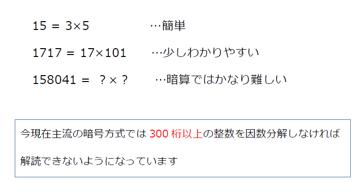

活動目的
FUN-ECMは何故素因数分解をするのか？
現在、インターネットにおける通信には、公開鍵暗号と呼ばれる暗号技術が広く使われており、それらの暗号技術の安全性の根拠には素因数分解の難しさが関係しています。
例えば、15という数字は、3×5に素因数分解することができます。公開鍵暗号において、15という数字が暗号化するための鍵(公開鍵といいます)にあたり、3と5という2つの数字が復号するための鍵(秘密鍵といいます)にあたります。
このような2桁の合成数ならば計算機を使わずとも頭で簡単に答えが出せますが、158041という数字を因数分解してみましょう。と言われたとき、頭での計算は難しいと思われます。

このように素因数分解は、桁数が大きくなればなるほど難しくなります。これは、人の頭だけに限らず、コンピューターも同じです。
実際にはもっと大きな桁数の数が使われていますが、このようにして素因数分解と公開鍵暗号は関連しています。そして、私たちはその暗号技術の改良の貢献のために楕円曲線法を使用し素因数分解をしているのです。
ECM-NETとは？
ECM-NETとは、楕円曲線法を用いて大きな桁数の素因数を見つけることを目的としたコンペティション(競争しあうサイト)のことです。ECN-NETには、現在登録されている素因数よりも大きな桁数の素因数を発見することで全世界誰でもランクインし、名前を載せることができます。
私たちは、どのくらい大きな桁数の素因数を見つけたかの指標として、このECM-NETというサイトを利用し、FUN-ECMという名前を載せることを活動目標にしています。